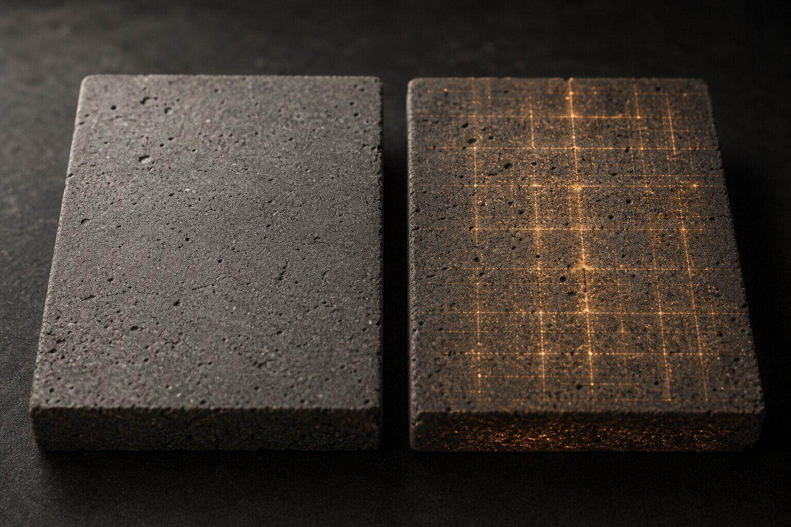
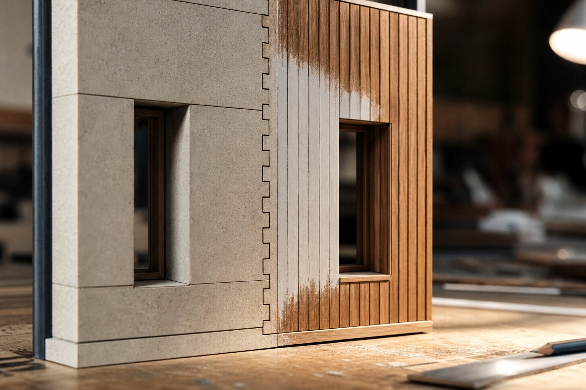

Can Veras Smart Selection replace Cryptomatte?
No. Veras Smart Selection can identify visible objects, materials or categories for fast local edits, while Cryptomatte records identities assigned by the source scene. Use Smart Selection when speed and visual meaning matter. Use Cryptomatte when repeatability, exact object ownership and downstream compositing matter.
A client circles three pale panels and asks for charred timber. Veras can now find a material or object with a click, then send the region through Modify or Replace. That is a good afternoon saved.
It is also easy to read too much into the word “selection.” The mask looks precise. The mechanism is still looking at an image and deciding what the pixels appear to represent.
What does Veras 4.5 actually select?
The official Veras 4.5 release post says Smart Selection can target a category, an object, a material or a custom prompt. Recent prompts remain available with thumbnails, and generated selection maps are cached and restored when users move between renders or return through the gallery. Chaos lists the feature across its design integrations and web app.
Those are meaningful workflow gains. A user can ask for “all chairs,” identify a finish by appearance or write a specific subject without tracing every edge. The selection can then feed Modify, which the Veras 4.4 notes describe as preserving underlying geometry, or Replace, which permits a fresh proposal in the chosen region.
The language invites a dangerous shorthand: material selection. A semantic system sees a region that looks like one material. It does not inherit the material slot, object name or hierarchy authored in Revit, Rhino, SketchUp or the renderer.
Why is Cryptomatte a different kind of evidence?
Cryptomatte begins in the scene. Blender documents object, material and asset passes; V-Ray documents named mattes encoded into multichannel OpenEXR. Each visible contribution can retain an identity assigned before the beauty image is flattened. Antialiased edges and partial coverage survive better than a crude color-ID pass.
That provenance changes the question. Smart Selection asks, “Which pixels look like the stone?” Cryptomatte asks, “Which visible contributions came from objects or materials carrying this identifier?” The first is interpretation. The second is bookkeeping.
Bookkeeping sounds dull until two visually identical finishes belong to different specification packages. A semantic selector may quite reasonably group them. The renderer knows they are separate because the scene says so.
| Question | Smart Selection | Cryptomatte |
|---|---|---|
| Where identity comes from | Visible image content | Scene object or material data |
| Best use | Fast local AI edit | Repeatable compositing mask |
| Works without source scene | Yes | No, the pass must be rendered |
| Understands hidden objects | No | No, only rendered contributions appear |
| Downstream portability | Depends on product export | Standard EXR-based workflow |

Can the Veras selection map leave Veras?
The release thread contains the useful answer. A user asked whether Smart Selection could export a color segmentation map for compositor work, comparable to a V-Ray ID element. A Veras maintainer replied that it was not possible at that time and said the team intended to add it later.
That exchange dates from May 2026. Product behavior can change, so confirm export in the exact build you plan to use. The larger point holds even if export arrives: a semantic segmentation map does not become scene-authored identity merely because it can be downloaded.
Our output-format test for AI renderers makes the procurement case. A selection tool inside one editor is useful. A durable mask that another application can open is a different capability and deserves its own row.
When should Smart Selection lead?
Let it lead when the source scene is unavailable, when the requested edit follows visible meaning rather than model structure, or when speed matters more than a reusable selection record. Cleaning a patch of planting, changing all visible seat upholstery or isolating the sky in a client JPEG are natural jobs.

It is especially good for exploratory edits. A designer can test dark timber on one elevation, compare it with terracotta and abandon both before anyone sets up a formal pass. The selection has done its work when the question is answered.
Check the boundary after every result. Glazing, reflected objects, fine planting and repeated small elements remain hard cases. An apparently clean mask may skip a reflected panel, merge a shadow with the material that casts it or collect a similar finish elsewhere.
The Smart Selection mask audit gives that inspection a practical sequence. Review the matte at delivery scale and enlarged, then compare changed pixels outside the intended region. A smart mask does not waive a difference check.
When should Cryptomatte lead?
Use Cryptomatte when the team owns the scene and expects revisions to recur. A facade option moving through several views should point back to named model content, not be rediscovered from each flattened frame. The same applies when another artist, office or application will receive the masks.
Cryptomatte is also the better authority when visual similarity conceals contractual difference. Two concrete mixes can look identical. One may belong to retained structure and the other to a proposed addition. Their pixels do not know the distinction. Their scene names can.
Our Cryptomatte-to-ComfyUI workflow explains how to extract a named matte to a plain grayscale file. Keep the multichannel EXR as the master. The simple mask is a delivery copy for a specific edit.
Should both masks ever be used?
Yes, but give each a job. Start with Cryptomatte for the architectural boundary: the named wall, roof or furniture group that may change. Use semantic selection inside that area when the requested edit refers to visible content the scene never labeled, such as cushions, flowers or accumulated visual noise.
Intersecting the two masks can limit semantic spill. The scene-derived matte sets the permitted parcel; the image-derived selection finds a subject within it. The final composite should still use the stricter permission mask after generation, because an AI edit can alter geometry inside an accurate selection.
This is the same distinction made by the ComfyUI change budget: generation context and final permission are not identical. A model may need nearby pixels to make a plausible junction. It does not need the right to publish all of them.
How should a studio record the choice?
Label every saved mask by source, not by hope. “smartselect_stone_prompt_v03” tells the next person it was inferred from appearance. “cryptomatte_material_facade_stone” says the scene supplied the identity. Record the source render revision, camera and any manual additions or exclusions.
Do not rename an inferred mask “material ID” because it happened to find a material. That small fiction survives into the archive, where someone later assumes a certainty the file never possessed.
Our take: convenience needs a provenance label
Smart Selection is the better tool when the task is quick, visible and disposable. Cryptomatte is the better record when the task is named, repeatable and shared. Neither wins by existing. Each wins by answering the right question.
There is a procurement lesson here too. Ask vendors to separate selection, export and provenance in feature tables. “Object selection” may describe a convenient click inside an editor, a downloadable raster mask, or a scene-linked identity channel. Those are three different promises. A two-minute export check will reveal which one was sold.
For a trial, choose a view with repeated materials, glass and one pair of visually similar objects that belong to different packages. Save the semantic result, extract the scene IDs and compare both against the edit brief. The disagreement is the useful part.
Let the clever mask guess. Make it wear a name tag.
Evidence note: this is a workflow analysis, not an ArchiGen hands-on product test. Product claims were checked against the Veras 4.4 and 4.5 release posts on 19 October 2026. Cryptomatte behavior was checked against Blender and Chaos documentation. The selection-map export statement is attributed to a Veras maintainer's May 2026 forum reply and should be reconfirmed in current builds.